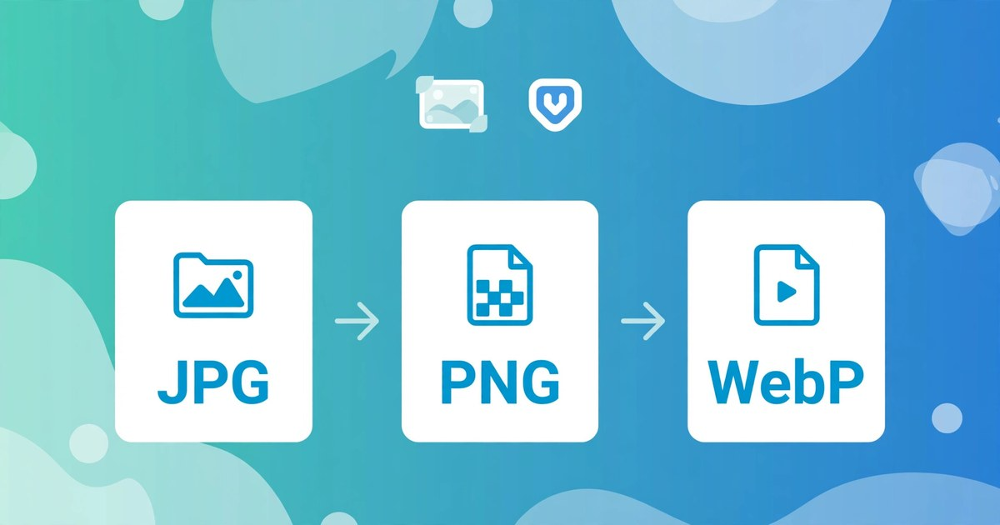

How to Convert Image Formats Online
Switch a photo or graphic between JPG, PNG and WebP in seconds — free, private, and without installing anything.
November 22, 2026 · 5 min read

You can convert an image between JPG, PNG and WebP in seconds: open ToolsHub's Image Format Converter, choose your image, pick the target format, set the quality if you are saving as JPG or WebP, and press Convert. The converted file downloads with the same name and the new extension — holiday-photo.png becomes holiday-photo.jpg — and your image never leaves your device, because the whole conversion runs in your browser. No signup, no upload, no install.
The wrong format is the most common reason an image is far too big or looks wrong: a photo saved as PNG can be five times larger than necessary, and a logo saved as JPG loses its transparent background to white.
What the tool does
The Image Format Converter takes one image and saves it in a different format, keeping the original pixel dimensions. It accepts JPG, PNG, WebP, GIF and other common image files, and it can output JPG, PNG or WebP.
- Three output formats — JPG, PNG or WebP. JPG is the default.
- Quality slider for JPG and WebP — 1% to 100%, starting at 90%. It has no effect on PNG, which is lossless.
- Loaded-file details — filename, dimensions, original format and size, for example "Loaded: holiday-photo.png (1920 × 1080 px, PNG, 3.57 MB)".
- Preview and new size — see the result and its file size before downloading.
- Clean download name — your filename, only the extension swapped.
- Private by design — everything happens on your device. Nothing is uploaded.
It does not resize: the converted image keeps the original dimensions. For fewer pixels, use the Image Resizer first.
Convert an image in 5 steps
- Open the Image Format Converter tool. Nothing to install or sign up for.
- Choose your image — a JPG, PNG, WebP, GIF or other image file. The "Loaded" line confirms the filename, dimensions and original size. A non-image file gets the message "Please choose an image file (JPG, PNG, WebP….)".
- Pick the target format and set the quality. Choose JPG, PNG or WebP; for JPG or WebP, move the quality slider. The default is 90%; for PNG the slider is ignored.
- Press Convert and check the result. The tool shows a preview, the From and To formats, and the new file size. Change the format or quality and convert again if needed — the original file is untouched.
- Download it, or press Reset. Download saves the converted file with the new extension. Reset clears the file and restores JPG at 90% for the next image.
Worked example 1: the same photo in three formats
I converted one 1920 × 1080 photo — 6,220,800 raw pixels, or 5.93 MB uncompressed — into all three formats at 90% quality. These are real measured sizes for that photo; your numbers will differ, but the pattern holds for almost any photo:
| Format | File size | Compared with PNG |
|---|---|---|
| PNG | 3,739,477 bytes (3.57 MB) | — |
| JPG, quality 90% | 674,468 bytes (658.7 KB) | 82.0% smaller |
| WebP, quality 90% | 497,666 bytes (486.0 KB) | 86.7% smaller |
The JPG is 3,739,477 − 674,468 = 3,065,009 bytes smaller than the PNG — 3,065,009 ÷ 3,739,477 is 0.820, so 82.0% smaller, and the PNG is 5.5 times the JPG. The WebP is 674,468 − 497,666 = 176,802 bytes smaller than the JPG — 26.2% smaller at the same quality. For a photo, PNG is the expensive choice, JPG the safe one, WebP the smallest.
Worked example 2: what the quality slider does
The same photo saved as JPG at three quality settings:
| JPG quality | File size | Compared with 90% |
|---|---|---|
| 90% (default) | 674,468 bytes (658.7 KB) | — |
| 80% | 475,674 bytes (464.5 KB) | 29.5% smaller |
| 50% | 338,349 bytes (330.4 KB) | 49.8% smaller |
From 90% to 80% saves 198,794 bytes — 29.5% smaller. To 50% saves 336,119 bytes — 49.8% smaller, about half the file. In practice 80% is the sweet spot: visibly the same as 90% on screen. WebP at 80% is only 183.2 KB — 60.6% smaller than the JPG at 80%.
Worked example 3: a transparent logo — where JPG loses
I also converted an 800 × 800 logo with a transparent background. The results flip the photo pattern:
| Format | File size | Transparency |
|---|---|---|
| PNG | 4,780 bytes (4.7 KB) | Kept |
| JPG, quality 90% | 20,383 bytes (19.9 KB) | Lost — becomes white |
| WebP, quality 90% | 4,312 bytes (4.2 KB) | Kept |
The JPG is 20,383 ÷ 4,780 = 4.3 times larger than the PNG — flat colours and sharp edges are the worst case for JPG, and the transparency is gone, replaced by white. The WebP is 468 bytes smaller than the PNG — 9.8% smaller — with transparency intact. Photos go to JPG or WebP; logos go to PNG or WebP; a transparent logo should never go to JPG.
JPG vs PNG vs WebP at a glance
| JPG | PNG | WebP | |
|---|---|---|---|
| Compression | Lossy — some detail is discarded | Lossless — every pixel exact | Lossy — smaller than JPG |
| Transparency | No — becomes white | Yes, full alpha | Yes |
| Best for | Photos, maximum compatibility | Logos, icons, screenshots, text | Web images of any kind |
| Watch out for | Quality loss on every re-save | Large files for photos | Old software may not open it |
For the smallest file, run the result through the Image Compressor — it shrinks the file further without changing its format.
6 mistakes to avoid when converting image formats
- Converting a transparent logo to JPG. The transparency becomes white, and the file can get bigger — in the test the JPG was 4.3 times larger than the PNG.
- Expecting the quality slider to shrink a PNG. PNG is lossless, so the slider is ignored. Change the format instead.
- Expecting the tool to resize. It keeps the original pixel dimensions — resize with the Image Resizer first.
- Re-saving a JPG again and again. Every JPG save discards a little more detail, so always convert from the original.
- Converting a photo to PNG "for quality". A photo PNG can be five times the JPG — in the test, 3.57 MB against 658.7 KB.
- Feeding in an animated GIF. Only JPG, PNG or WebP come out, and only the first frame is kept — the result is a still image.
Frequently asked questions
Does converting an image change its dimensions?
No. The converter keeps the original pixel dimensions — a 1920 × 1080 photo stays 1920 × 1080. Only the format and file size change. For fewer pixels, use the Image Resizer first.
Will converting to JPG remove transparency?
Yes. JPG has no transparency, so the tool fills transparent areas with white. Choose PNG or WebP to keep it.
Why is my PNG bigger than the JPG of the same image?
PNG is lossless: it keeps every pixel exactly, so for a photo it is usually several times larger than a JPG. In the test the PNG was 3.57 MB and the JPG at 90% was 658.7 KB — 82.0% smaller.
Is my image uploaded anywhere when I convert it online?
No. The converter runs entirely in your browser: the image is read, converted and downloaded on your device. Nothing is sent to a server.
Related tools: Image Compressor · Image Resizer · Image Cropper